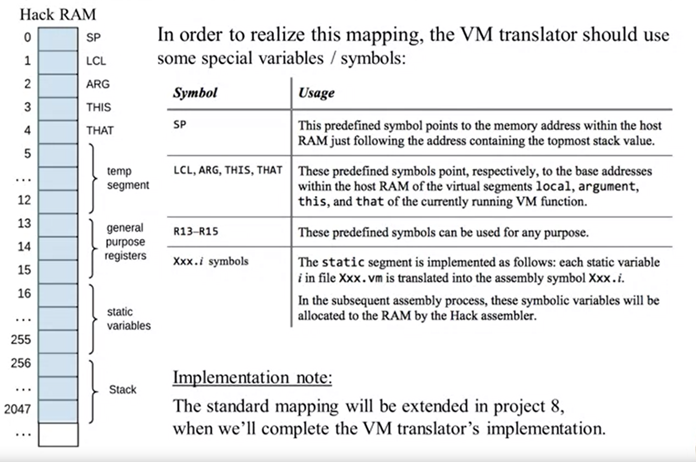
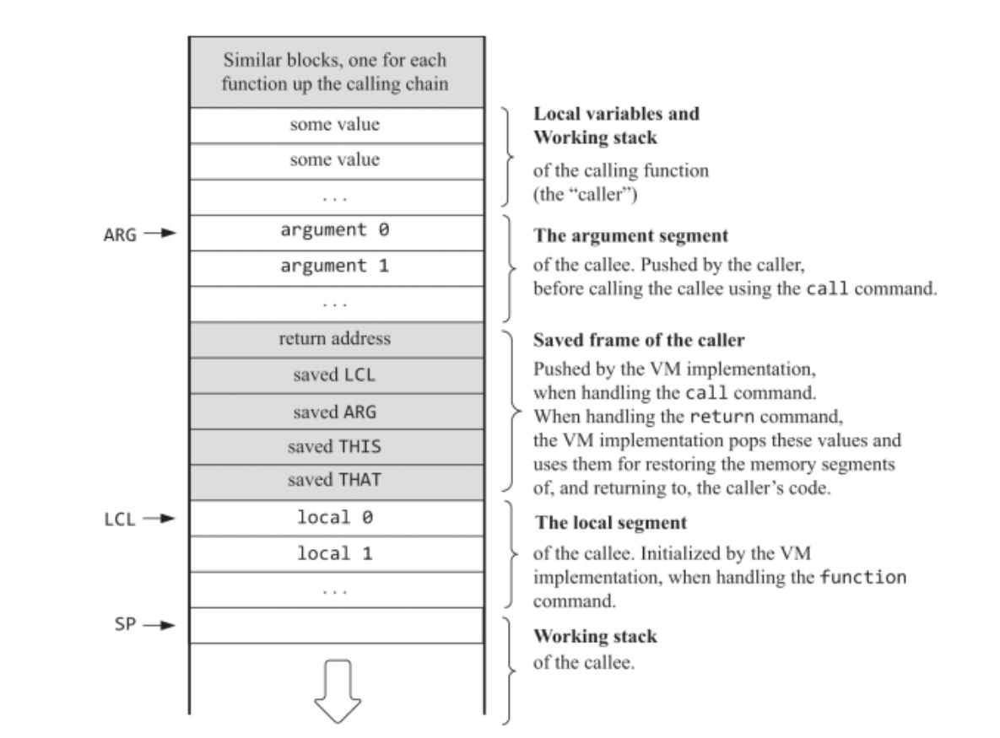
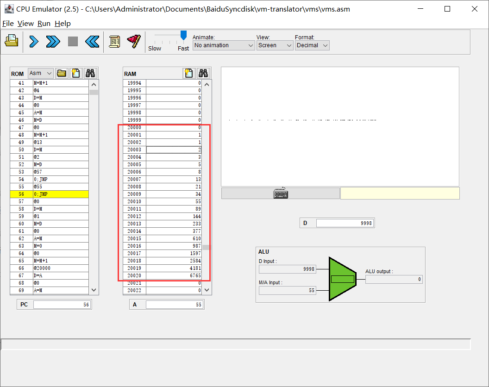

计算机系统要素学习笔记 Part2——从汇编器到虚拟机
这段时间学了点 Rust，做了两半篇笔记（然后上班各种写文档，头疼死），现在该回过头来继续了。
第二部分，软件的部分，从 Assembler 到虚拟机，到高级语言的编译器，到操作系统（其实就是该高级语言的一堆标准库，我觉得实在称不上是操作系统），到俄罗斯方块。这里学习虚拟机的部分。
Assembler
首先是汇编器……其实没什么好说的，注意忽略注释，忽略空行，不需要考虑代码尾随注释的情况，注意LCL，ARG等名字也需要注册。唯一的复杂点的部分是解析 C 指令，注意到有明确的标识符=和;可供使用，正则要写对。其它的更多的是体力活，特别是翻译 C 指令的时候。代码不贴了，用啥语言都一样。
虚拟机 Part 1
后面的部分要在 Hack 机上实现一个类似 Java 的高级语言。实现其的方式同样类似 Java——先编译成一种中间代码，其被设计用来跑在虚拟机上；然后再将中间代码翻译到机器语言，但和 JVM 不同的是，JVM 是在运行时做的翻译工作，而这里是在编译时，在运行时这里的 VM 没有什么存在的实感。这让该虚拟机更多地像是一个心智模型而非运行时存在的实体。
从高级语言到机器语言的翻译过程中，这里的虚拟机语言是一个中间的界面，把它想象成在一台抽象机器上执行的独立的语言是有必要的。这时，我们就能描述这样一台执行中间语言的虚拟机器，实际上描述它就是在描述这个中间语言，and vise versa。同时，描述它时不需要在 Hack 机或是 Jack 语言的上下文下——虽然中间语言的设计是需要考虑前后端的性质的。
这个 2-tier 步骤的编译器有何优越？它允许不影响前端的情况下添加后端——只要实现虚拟机语言到对应机器语言的翻译部分即可，比如我可以对其它的架构去作为其后端，比如游戏《Turing Complete》中的 8 位计算机；它允许不影响后端的情况下添加前端——只要实现另一门语言到虚拟机语言的翻译部分即可，这允许我使用其它自制语言去作为前端。
Specification Part 1
首先离开前端后端，了解该 VM 的性质。该 V<是一个栈式虚拟机，有四种指令——算术/逻辑，访存，分支和函数定义/调用（可见它是相当抽象的，相较于机器语言）。这里先只处理算术指令和访存指令。
VM 有如下虚拟内存段，访问每个内存段中的值时，通过segment index去访问，如argument 0代表第一个参数，实际上到时候取它的行为也将是argument[0]（实际实现后端的时候，可能在不同函数调用中，argument 和 local 指向的是堆上不同的位置）：
- argument：代表函数参数
- local：代表函数本地参数
- static：全局变量
- constant：0 到 2^15-1 的常数
- this：下章再提
- that：下章再提
- pointer：长度始终为 2，
pointer[0]指向 this（即在下面的实现中等于THIS） ，pointer[1]指向 that（即在下面的实现中等于THAT） - temp：临时存储用（其实这个没必要写在 Spec 里不是？）
指令（及其语法）有：
push segment index：把segment[index]push 到栈顶pop segment index：pop 栈顶到segment[index]add：pop 栈顶数据y，x，pushx + y（y 是第一次 pop 出来的）sub,eq，gt，lt，and，or：同 addneg,not：pop 栈顶，push 计算后的值
虚拟机中只有 16 位有符号整数一种数据类型，但规定布尔类型——false 为 0，true 为-1（即 FFFF）。
注意 Specification 中没有规定栈顶指针 SP，没有规定栈的实现方式（比如是下增还是上增），没有规定堆，对实现来说其实还是有很多发挥空间的？
VM Translator/Implementation Part 1
上面的东西全是虚拟的，不存在的玩意，要把它变成现实，需要实现它。这里实际上有两个对虚拟机的实现——Hack 机，VM 命令会翻译成 Hack 机器语言去执行；VM 模拟器，一个执行 VM 命令的软件，方便 debug。
但要让虚拟机实际发挥作用，需要描述一个 VM 翻译器，把 VM 命令翻译成机器语言指令。这就是这章的工作。首先需要决定如何在目标机器上表示栈和虚拟内存 segment，然后需要把 VM 命令翻译成在目标机器上执行的低级指令的序列。
如何进行内存布局，以及如何确定每条虚拟机的指令对应的相应的机器指令。需要一个参考性质的东西，称为标准映射，去规定这样一个对应，既是方便和其它机器码（非 VM 生成的）交互，也是方便做测试。对每种架构都应当有对应的标准映射。
但不用搞那么严肃。考虑 Hack 机。首先是如何表示栈和虚拟内存段，这里规定，RAM 中 0-15 的位置表达有特定意义的寄存器，16-255 存放静态变量（static 段），256-2047 为栈，2048 及以上直到屏幕和键盘为堆。
| Name | Index | Usage |
|---|---|---|
| SP | R0 | 栈顶指针 |
| LCL | R1 | local 段的基址 |
| ARG | R2 | argument 段的基址 |
| THIS | R3 | this 段的基址 |
| THAT | R4 | that 段的基址 |
| TEMP | R5-R12 | temp 段 |
| R13-R15 | R13-R15 | 临时存储 |
SP 指向栈顶元素的下一个位置（即栈为空时为 256），push 时执行stack[SP]=X; SP++，pop 时执行SP--; X=stack[SP]。
temp 段和 R13-R15 有何区别？temp 段是从虚拟机角度出发的临时变量，它是虚拟机指令间的临时变量，R13-R15 是从单条虚拟机指令出发的，Hack 机指令间的临时变量。
那么，local，argument，this，that 等内存段这些究竟放在哪？它们放在堆上——剩余 RAM 的任意位置。因此需要一个指针指向当前的这些段的基址。
static 段是全局变量，任何地方均可见。但对每个全局变量，这里只有一个索引去确认它，如何避免命名空间污染？利用 Assembler 遇到未知的标签时所用的机制——使用Foo.i去作为Foo.vm下的push/pop static i所操作的 RAM 位置，Assembler 会自从从 16 开始去按照标签出现的顺序去做映射。比如Foo.vm中有两句：pop static 5; pop static 2;，这时候它们所操作的 RAM 位置可能是 16,17。这样对两个不同 vm 文件中的同一句pop static 0，它们操作的 RAM 就会不同。
pointer 也是一个虚拟段，pointer 0操作R3，即THIS，pointer 1操作R4，即THAT，pointer 用于直接操作这两个地址上对应的值（没有指针跳转！）。

注意实现翻译器时，需要处理命令后尾随注释的情况。这个翻译器居然也能够是 one-pass 的……谁能想到呢。
虚拟机 Part 2
图灵完备之路！这章要实现分支指令和函数调用指令。大头要来喽（但其实比想象中还简单一些，真实践起来才发现栈式虚拟机操作起来是真的方便）！分支指令可能还稍微好说，但函数调用绝不是 trival 的事——保存和恢复上下文，参数传递，返回值，嵌套函数调用，递归，内存分配和回收……这显然会引入一个运行时模型——不是逐字逐句地去把虚拟机指令翻译成汇编语言（虽然确实如此），而是在此之外附加一些东西——如何启动程序执行，程序终止时做何操作，如何传参，执行函数时如何分配和回收内存……运行时模型也将在 Specification 中描述，其行为需要一些额外的汇编代码去实现。
具体来说，一个函数（称为调用者 caller）调用另一个函数（称为被调用者 callee）时，需要做下面的工作：
- 保存返回地址——callee 执行完毕后要返回的地方
- 保存 caller 当前的内存资源（上下文）
- 为 callee 分配内存资源
- 让传递给 callee 的参数被 callee 可见
- 开始执行 callee 代码
当 callee 执行完成并返回一个值时，需要做下面的工作：
- 让 callee 返回的值被 caller 可见
- 回收 callee 的内存资源
- 恢复原 caller 的内存资源
- 从返回地址处继续执行 caller 的代码
这一堆玩意怎么做到？考虑到函数调用是可以任意嵌套的，这里需要一个类似链表的结构去记录当前函数的调用者使后续能够返回，这实际上就是函数调用栈。对每次函数调用，都需要创建一个栈帧去保存它的相关信息，比如 local，argument，this，that 段地址，当前栈。
如何表达栈帧？在这里，我们需要一个栈结构，从哪里来呢………………不是有个现成的吗？直接把这些玩意（的指针）都 push 上去，后续再 pop 嘛！返回地址也同样，把函数调用后的下一条指令加一个地址，也 push 到栈中。
关于保存当前的“上下文”：
- local，argument，this，that：把指针 push 到栈上
- 返回地址：同上
关于“内存分配”：
- 栈（即下图的 Working stack）：每个函数需要看到自己的栈，这是自动得到的，根据栈的线性和单方向性
- argument：直接从调用者的栈中“切片”，不做分配
- local：因为其长度已知，同样直接放到栈上
- this，that：？

所以这里的问题是，如何确定 argument 和 local 究竟有多长？采取最弱智的方式——直接在代码里标注。定义函数时语法为function FN_NAME LOCAL_NUM，其中LOCAL_NUM为本地变量的数量；调用函数时语法为call FN_NAME ARGUMENT_NUM，其中ARGUMENT_NUM为参数数量。顺便return用于从函数中返回。
Specification Part 2
其实也称不上 Specification 啦
对 caller 来说：
- 在调用前，必须把所有 argument 按顺序 push 进去
- 调用 callee
- callee 返回后，之前 push 的 argument 消失不见，栈顶必为 callee 的返回值
- callee 返回后，所有内存段和调用 callee 之前保持一致（除了 temp，其具体值是未定义的，和 static，所有函数共享同一个 static）
对 callee 来说：
- 在执行之前，argument 段已被使用所有参数进行初始化
- local 段已分配且全为 0
- static 段为相应 vm 文件的 static 段（这个已实现），this，that，pointer 和 temp 段此时未定义
- 工作栈为空
- 返回前必须把返回值 push
约定，必须有一个Main.vm，其中定义函数main，VM Translator 要生成一个函数Sys.init，其中正确进行初始化并调用Main.main，然后走一个无限循环。
Implementation Part 2
在执行用户代码前，应初始化虚拟机，即设置SP=256。注意虚拟机的实现和 Specification 中均未提及“堆”……这个后面必定会涉及到的。
翻译器需要获取翻译所有 vm 文件并拼接（link？）成单个 asm 文件，文件名使用目录名或文件名。
关于翻译到 asm 后各种符号的命名：
- 函数名：
Foo.vm下的bar函数会翻译成Foo.bar - 跳转标签：对
Foo.vm下的bar函数中的标签label，翻译成Foo.bar$label - 返回地址标签：对
Foo.vm下的bar函数中的第i个 call，翻译成Foo.bar$ret.i，这里的 i 似乎是要求顺序的。
这里很奇怪，一切 VM 语言示例里都写着Main.main，但按这么说如果它写在main.vm里的话，最后生成的 label 应该是main.Main.main……这里按它测试示例中的来——函数名前面带上 class 名，不管文件名了。不考虑重名问题——这是编译器关心的事。
这里的工作就是另外再处理 6 种 VM 指令——function，call，goto，if-goto，label，return。注意上面的标签命名时要带上函数名，因此跑的时候需要注意当前所在的函数。
需要注意的是，即使这里有类似高级语言函数定义的东西，函数之间其实还是顺序的，如果没有 return 就直接走到某个function命令，它还是会继续往下执行的，所以必须记得return，同时这意味着不需要显式地调用 Sys.init，把这个函数定义放到最前就行了，但加个 call 总是好文明。
同时这里准备跑两遍——检查是否有哪个调用的函数是未定义的，避免拼写错误。
这里主要问题是，当遇到function，call，return时，究竟具体该做什么？首先明确——它们其中任何一个都是能独立解释的，不需要知道其余的信息。即使需要，也仅仅是个 ID 而已——根据文件名和函数名在执行之前就确定的。
function，需要标注call跳转的入口，同时需要初始化local——把local设为栈顶，然后执行i次push constant 0就行了call，call需要初始化argument，标注和保存返回地址，保存上下文return，暂存返回值，恢复上下文，重设栈（剧透：直接设置 SP 为自己的 ARG 即可），跳转到返回地址并再push返回值
实际写完发现其实这里东西其实不多…但若是哪里有小 bug，debug 起来要死人。一个想法是在每个虚拟机指令前插入一些 A 指令，值设为30000 + 指令行数，供后续遇到 bug 时可以使用模拟器的断点停在虚拟机指令的特定行。

本博客所有文章除特别声明外，均采用 CC BY-NC-SA 4.0 协议 ，转载请注明出处！